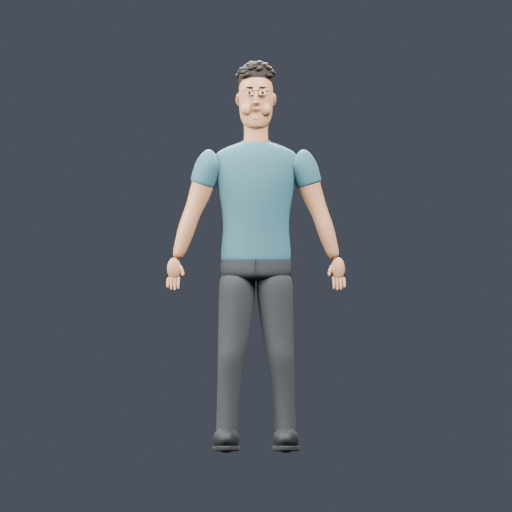
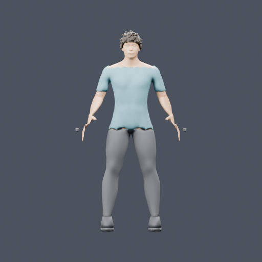
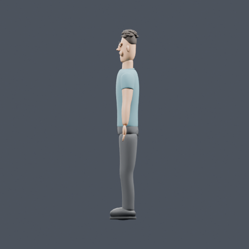
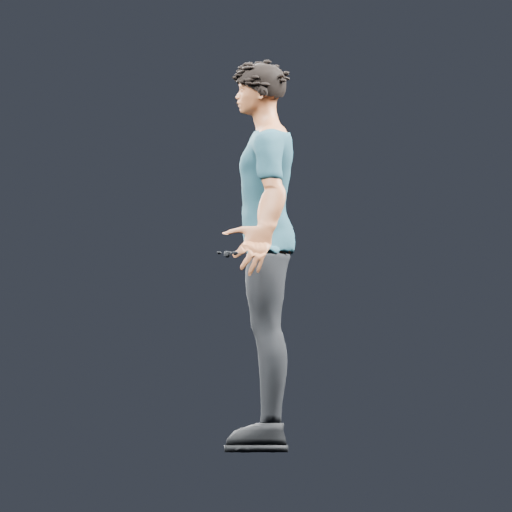
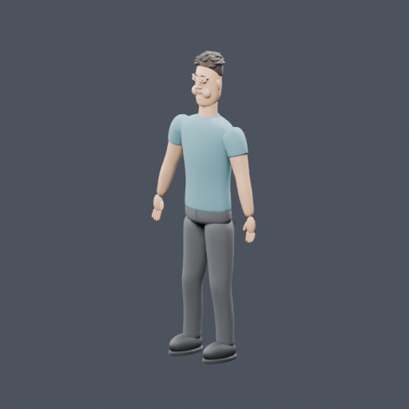
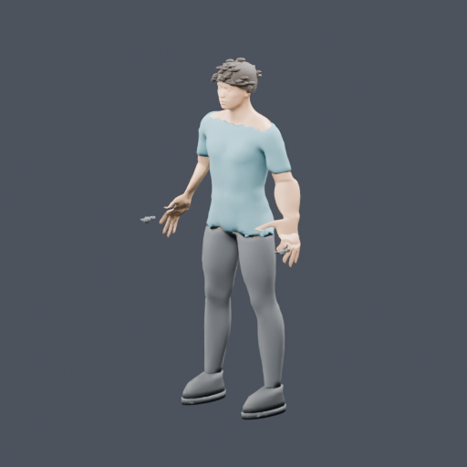
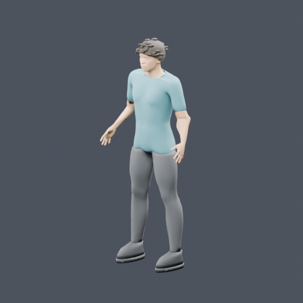

Real Codex CLI → gen3d Blender MCP → Blender 5.1.2. MPFB 2.0.17 was installed locally. Both fresh models use identical source bytes, original text and modeling feedback. The recorded arm-pose inconsistency was explicitly allowed with Warn and continue.
Concept · Front reference · Left-side reference · Back reference · Three-quarter reference · Hashes and measured evidence
| Existing Blender modeling (scratch) | MPFB-assisted, initial result |
|---|---|
 Front |  Front |
 Left side |  Left side |
 Three-quarter |  Three-quarter |
| GLB · Blender scene · Summary | GLB · Blender scene · Summary · Body evidence |
The MPFB base topology is retained. Visual appearance is an experiment: the initial MPFB result has distorted hands, rough shirt edges and approximate hair; scratch has visibly separate body/face parts. Neither result demonstrates photorealistic skin, hair or identity likeness. See the validation document for verified measurements, subjective observations and the separate saved-scene revision trial.
Additional feedback repaired hands and garment boundaries. This uses the same references but different modeling feedback, so it is a revision trial rather than an equal-instruction comparison.
Revised GLB · Revised Blender scene · Preservation evidence
